Guía de Wodryn: mejores configuraciones y equipos para Hero Wars Alliance
- Por: Alexandre Domingos. .
¿Y si tu tanque pudiera transformar la presión enemiga en energía, ayudar a tus héroes de daño a asestar golpes críticos y proteger al equipo mediante esos mismos atributos críticos? Wodryn trae esa idea a Hero Wars Alliance. Es un tanque de Fuerza de la Senda de la Naturaleza, y su conjunto de habilidades gira en torno a Corteza de Roble: un recurso que conecta la eliminación de efectos negativos, la generación de energía y el apoyo a los golpes críticos.
Mi primera impresión es que Wodryn recompensa a los jugadores que construyen su equipo en torno a todo su conjunto de habilidades. Renovación de la Corteza ayuda a los aliados a recuperarse de los efectos negativos, Poder del Bosque Profundo favorece sus golpes críticos, y su Reliquia Legendaria añade represalias y una forma de convertir el daño puro enemigo en daño mágico. Voy a explicarte cada parte para que veas dónde importa más tu inversión.
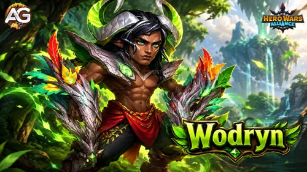
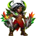
Índice de Wodryn
- ¿Quién es Wodryn?
- Mis valoraciones de batalla
- Ventajas y desventajas
- Atributos máximos con Talismán de las Dos Formas
- Talismán de las Dos Formas
- Habilidades y prioridades de mejora
- Habilidades de la Reliquia Legendaria
- Habilidad de clase Tanque
- Mejores apariencias
- Prioridad de artefactos
- Prioridad de glifos
- Cómo contrarrestarlo
- Sinergias
- Equipo 1 y talismanes
- Consejos para la Hidra
- Veredicto final de Alexandre
¿Quién es Wodryn en Hero Wars Alliance?
Huyendo de la Señora Oscura, Wodryn llevó a Dominion el tesoro sagrado de su tierra natal. Cerca de Strongford, una magia desconocida desató su poder, transformándolo a él y al bosque. El poder salvaje del bosque vive en su interior. Cada transformación pone a prueba su voluntad, pero solo él decide cuándo liberar a la bestia.
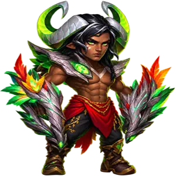
- Clase principal: Tanque
- Posición: Primera línea
- Atributo principal del héroe: Fuerza
- Facción: Senda de la Naturaleza
- Sinergia principal: Equipos de golpes críticos y aliados situados detrás de él.
El detalle de la posición importa. Su eliminación de efectos negativos, su bonificación de golpe crítico y su reducción de daño básica protegen o apoyan a los aliados detrás de él. Cuando colocas a otro héroe delante de Wodryn, no des por hecho que ese héroe recibe dichos efectos. La pasiva de su reliquia de nivel 30 tiene un alcance distinto: convierte el daño puro enemigo contra su equipo mientras él sigue vivo.
Piensa en Corteza de Roble como el vínculo entre sus habilidades. Renovación de la Corteza genera capas, Poder del Bosque Profundo consume dos, y la mejora de la reliquia de nivel 20 añade capas cuando se activa la protección de Roble Inquebrantable del propio Wodryn. Mantener esa interacción en funcionamiento es el núcleo de su plan de batalla.
Ventajas y desventajas de Wodryn - Hero Wars Alliance
✅ Ventajas
- Elimina los efectos negativos de sí mismo y de los aliados detrás de él mientras se cura a sí mismo.
- Conecta el apoyo a los golpes críticos con la reducción de daño.
- Corteza de Roble otorga energía adicional cuando recibe daño.
- La Reliquia Legendaria añade represalias y conversión de daño puro en mágico.
❌ Desventajas
- Varios efectos fundamentales excluyen a los aliados situados delante de él.
- La reducción de daño depende de una probabilidad de activación; no está garantizada.
- Poder del Bosque Profundo consume la Corteza de Roble que necesitan sus otras mecánicas.
- Las interacciones defensivas más importantes requieren los niveles 20 y 30 de la reliquia.
Wodryn - Atributos máximos con Talismán de las Dos Formas
| Atributo | 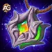 Talismán de las Dos Formas |
|---|---|
Inteligencia | 3,916 |
Agilidad | 3,850 |
Fuerza | 17,105 |
 Salud Salud | 1,497,121 |
 Ataque Físico Ataque Físico | 92,912 |
 Ataque Mágico Ataque Mágico | 26,854 |
Armadura | 14,078 |
Defensa Mágica | 33,048 |
Esquiva | 0 |
Vampirismo | 0 |
Penetración de Armadura | 10,650 |
Penetración Mágica | 0 |
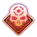 Probabilidad de Golpe Crítico | 10,054 |
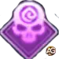 Probabilidad de Golpe Crítico Mágico | 0 |
Tenacidad | 13,603 |
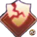 Aplastamiento | 0 |
Reflejo Mágico | 0 |
Las bonificaciones adicionales mostradas son +255,480 Salud y +31,772 Ataque Físico. Los totales anteriores ya incluyen estas bonificaciones; no las sumes de nuevo.
Guía del talismán de Wodryn: Talismán de las Dos Formas
Talismán de las Dos Formas

Fuerza favorece su función en la primera línea: cada punto otorga 40 Salud y, como Fuerza es su atributo principal, 1 Ataque Físico. Tenacidad añade protección cuando tiene poca Salud. Evalúa las tres ranuras de reasignación por su total combinado de Tenacidad.
Atributo principal de nivel 50: Fuerza +2,000, que otorga +80,000 Salud (2,000 × 40) y +2,000 Ataque Físico (2,000 × 1).
Bonificación máxima combinada de reasignación: Tenacidad +2,200 por ranura, para un total de +6,600 de Tenacidad total (2,200 × 3).
Talismán de las Dos Formas | Bonificación total |
|---|---|
Fuerza | +2,000 |
| Ranura 1 | Ranura 2 | Ranura 3 | Bonificación total de reasignación |
|---|---|---|---|
Tenacidad +2,200 |
Tenacidad +2,200 |
Tenacidad +2,200 |
Tenacidad +6,600 |
Estas son la bonificación del atributo principal de nivel 50 y los valores máximos de reasignación. Tu bonificación real de Tenacidad es la suma de los tres valores de reasignación mostrados, hasta +6,600. Esto es una bonificación de atributo, no un porcentaje fijo de reducción de daño.
Mi recomendación es tratarlo como una inversión en supervivencia. Mantener vivo a Wodryn conserva su apoyo y, en el nivel 30 de la reliquia, también mantiene activa Ley del Bosque.
Consejos de Alexandre: Solo se aplican las bonificaciones del talismán equipado. Para consultar las reglas de mejora y reasignación, visita mi guía de talismanes de Hero Wars Alliance.
Habilidades de Wodryn y prioridad de mejora de la Reliquia Legendaria
Aprende cómo Corteza de Roble de Wodryn conecta la eliminación de efectos negativos, los golpes críticos y la protección del equipo; después, descubre en qué habilidades e hitos de la reliquia me centraría primero.
Mis prioridades reflejan la función práctica de cada habilidad en su conjunto. Las cuatro habilidades básicas mantienen abajo su orden en el juego, con cada mejora legendaria justo después de su habilidad básica. Las nuevas habilidades de la reliquia aparecen a continuación; los hitos posteriores siguen requiriendo los niveles anteriores de la reliquia.
Los cálculos siguientes utilizan los atributos máximos de Wodryn con Talismán de las Dos Formas: 92,912 Ataque Físico y 33,048 Defensa Mágica. Los cambios temporales de atributos durante la batalla pueden modificar estos resultados.
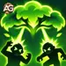
1.º - Corona de la Ira
Descripción en el juego: Invoca una Corona sobre el equipo enemigo que inflige daño cada segundo a todos los enemigos situados debajo durante 6 segundos. Este ataque siempre acierta a los enemigos y no se puede esquivar.
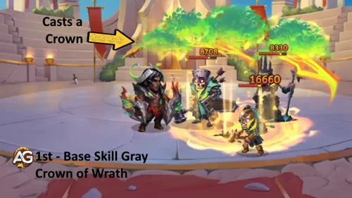
Explicación de la habilidad: Su habilidad definitiva aplica daño físico durante seis segundos en lugar de un único golpe inmediato. Cada aplicación de daño inflige 110,912 de daño físico (100% de Ataque Físico + 18,000 = 92,912 + 18,000) antes de la mitigación. La corona ataca una vez por segundo y presiona a todos los enemigos situados debajo. Sus ataques siempre aciertan y no se pueden esquivar; esa propiedad no hace que el daño físico ignore la Armadura.
Fórmula con Talismán 1: Talismán de las Dos Formas
- Daño físico por aplicación: 100% Atq. Fís. + 18,000 = 110,912 (100% × 92,912 + 18,000)
Información de animación de la habilidad
- Nivel de habilidad mostrado: 120
- Duración: 6 segundos
- Intervalo de daño: 1 segundo
- Retraso de animación: 1 segundo
- Área: 200
- Palabras clave: Daño Físico, Daño de Área, No Se Puede Esquivar
Prioridad de evolución: Media — una presión de daño útil, especialmente contra Esquiva, pero la eliminación de efectos negativos y la protección del equipo son los motivos más sólidos para desarrollar a Wodryn. Priorizaría esas funciones antes de buscar su daño individual.
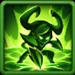
2.º - Renovación de la Corteza
Descripción en el juego: Elimina todos los efectos negativos y de control de sí mismo y de los aliados detrás de él; después se cura a sí mismo. Wodryn obtiene 1 capa de Corteza de Roble por cada efecto eliminado, pero al menos 1 capa. Mientras Corteza de Roble está activa, Wodryn obtiene Energía adicional cada vez que recibe daño.
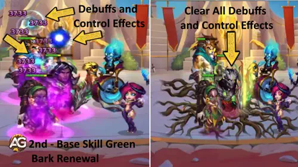
Explicación de la habilidad: Aquí comienza su ciclo de Corteza de Roble. Wodryn elimina los efectos negativos de sí mismo y de los aliados detrás de él y después cura a sí mismo por 148,368 de Salud (150% de Ataque Físico + 9,000 = 1.5 × 92,912 + 9,000). La curación no se extiende a esos aliados. Obtiene una capa por efecto eliminado, con un mínimo de una capa, por lo que la habilidad puede seguir proporcionando Corteza de Roble cuando no hay nada que eliminar. Mientras Corteza de Roble está activa, recibir daño otorga 100 de energía adicional. Eso puede ayudarle a alcanzar antes su siguiente habilidad definitiva.
Fórmula con Talismán 1: Talismán de las Dos Formas
- Autocuración: 150% Atq. Fís. + 9,000 = 148,368 (150% × 92,912 + 9,000)
- Energía adicional: 100 cada vez que Wodryn recibe daño mientras Corteza de Roble está activa
Información de animación de la habilidad
- Nivel de habilidad mostrado: 120
- Tiempo de recarga inicial: 4 segundos
- Tiempo de recarga: 9 segundos
- Retraso de animación: 0.65 segundos
- Obtención de Corteza de Roble: 1 capa por efecto eliminado; al menos 1 capa
- Energía adicional al recibir daño: 100 mientras Corteza de Roble está activa
- Palabras clave: Eliminación de Efectos Negativos, Autocuración, Obtención de Energía
Prioridad de evolución: Muy Alta — la eliminación de efectos negativos ayuda a los aliados a volver a luchar, la autocuración favorece su supervivencia y Corteza de Roble alimenta sus otras habilidades. Contribuye a varias partes del plan del equipo al mismo tiempo.
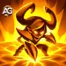
2.º - Mejora de Renovación de la Corteza - Nivel de la Reliquia Legendaria 10
Descripción en el juego: Mientras Corteza de Roble está activa, Wodryn inflige daño a los enemigos delante de él por cada 6 golpes que recibe. El contador de golpes se reinicia cuando Corteza de Roble expira.

Explicación de la habilidad: Con Corteza de Roble activa, Wodryn cuenta los golpes recibidos y toma represalias contra los enemigos de delante cada sexto golpe. Cada represalia inflige 139,368 de daño físico (150% de Ataque Físico = 1.5 × 92,912) antes de la mitigación. Si Corteza de Roble expira, el progreso hacia la siguiente represalia se reinicia: cinco golpes acumulados no se trasladan a un nuevo período de Corteza de Roble.
Fórmula con Talismán 1: Talismán de las Dos Formas
- Daño físico por represalia: 150% Atq. Fís. = 139,368 (150% × 92,912)
- Desencadenante: Cada 6 golpes recibidos mientras Corteza de Roble está activa.
Información de la habilidad
- Requisito: Corteza de Roble debe estar activa
- Desencadenante: Cada 6 golpes recibidos
- Reinicio del contador: Cuando se pierde Corteza de Roble
- Objetivos: Enemigos delante de Wodryn
- Palabras clave: Daño Físico, Represalia, Legendaria
Prioridad de evolución: Media — añade daño cuando los enemigos lo golpean repetidamente, pero necesita que Corteza de Roble permanezca activa. La valoro como un beneficio adicional de camino a la interacción defensiva más potente del nivel 20.
3.º - Poder del Bosque Profundo
Descripción en el juego: Elimina 2 capas de Corteza de Roble de sí mismo y aumenta la Probabilidad de Golpe Crítico de los aliados detrás de él durante 9 segundos. Efecto pasivo. Por cada capa de Corteza de Roble eliminada, la Probabilidad de Golpe Crítico de Wodryn aumenta hasta el final de la batalla.
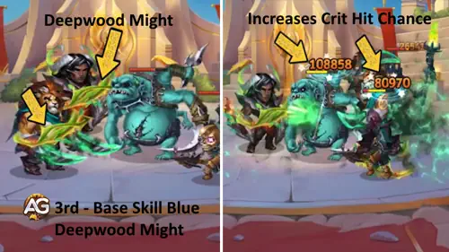
Explicación de la habilidad: Wodryn consume dos capas de Corteza de Roble para otorgar a los aliados detrás de él una bonificación temporal de golpe crítico. Por cada capa eliminada, la bonificación de los aliados es de 20,382 de Probabilidad de Golpe Crítico (20% de Ataque Físico + 1,800 = 0.2 × 92,912 + 1,800 = 20,382.4 antes de eliminar la parte fraccionaria). Su propio aumento por capa eliminada es de 5,845 de Probabilidad de Golpe Crítico (5% de Ataque Físico + 1,200 = 0.05 × 92,912 + 1,200 = 5,845.6 antes de eliminar la parte fraccionaria), y dura hasta el final de la batalla. Estos son puntos de atributo, no porcentajes. Los atributos críticos también influyen en la probabilidad de activación defensiva de Roble Inquebrantable, por lo que esta habilidad conecta el ataque con la protección. La duración indicada de 9 segundos corresponde a la bonificación temporal de los aliados.
Fórmula con Talismán 1: Talismán de las Dos Formas
- Probabilidad de Golpe Crítico de los aliados por capa eliminada: 20% de Atq. Fís. + 1,800 = 20,382 mostrados (20% × 92,912 + 1,800 = 20,382.4)
- Probabilidad de Golpe Crítico de Wodryn por capa eliminada: 5% de Atq. Fís. + 1,200 = 5,845 mostrados (5% × 92,912 + 1,200 = 5,845.6)
Información de animación de la habilidad
- Nivel de habilidad mostrado: 100
- Tiempo de recarga inicial: 6 segundos
- Tiempo de recarga: 14 segundos
- Retraso de animación: 1 segundo
- Duración de la bonificación de los aliados: 9 segundos
- Corteza de Roble consumida: 2 capas
- Palabras clave: Bonificación, Probabilidad de Golpe Crítico, Bonificación Propia Permanente Durante la Batalla
Prioridad de evolución: Alta — mejora el mecanismo de golpes críticos que favorece tanto el daño del equipo como Roble Inquebrantable. Su valor aumenta cuando tu equipo puede aprovechar los golpes críticos y mantener disponible Corteza de Roble.
4.º - Roble Inquebrantable
Descripción en el juego: Wodryn y los aliados detrás de él tienen una probabilidad de recibir daño reducido. La probabilidad depende de la Probabilidad de Golpe Crítico de cada Héroe.

Explicación de la habilidad: Cuando se activa esta protección, el héroe afectado recibe el 33% del daño en esa etapa de reducción (100% − 67% = 33%). La distinción importante es que el 67% es la cantidad de reducción, no la probabilidad de activación. La probabilidad de golpe crítico del propio héroe protegido determina su probabilidad de activar el efecto. No se especifica la fórmula exacta de activación, por lo que aquí no se puede convertir un valor de atributo crítico en un porcentaje defensivo.
Efecto con Talismán 1: Talismán de las Dos Formas
- Reducción de daño al activarse: 67%
- Daño restante en esta etapa de reducción: 33% (100% − 67%)
- Probabilidad de activación: Depende de la Probabilidad de Golpe Crítico de cada héroe protegido; no se especifica la fórmula exacta.
Información de la habilidad
- Nivel de habilidad mostrado: 80
- Reducción de daño al activarse: 67%
- Objetivos: Wodryn y los aliados detrás de él
- Probabilidad de activación: Depende de la probabilidad de golpe crítico de cada héroe protegido
- Restricción de nivel: La probabilidad de activar la habilidad se reduce si el nivel del aliado es superior a 120
- Palabras clave: Pasiva, Reducción de Daño
Prioridad de evolución: Muy Alta — esta es su mecánica central de protección del equipo. El apoyo a los golpes críticos le da una conexión ofensiva, y la mejora de la reliquia de nivel 20 permite que las activaciones del propio Wodryn repongan Corteza de Roble.
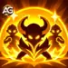
4.º - Mejora de Roble Inquebrantable - Nivel de la Reliquia Legendaria 20
Descripción en el juego: Siempre que Roble Inquebrantable reduce el daño recibido por Wodryn, obtiene 2 capas de Corteza de Roble.
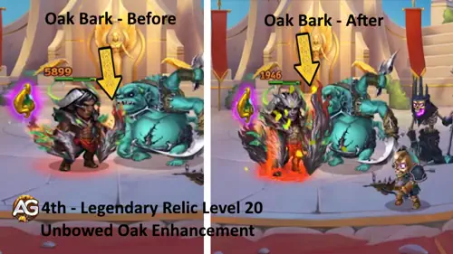
Explicación de la habilidad: Cada vez que Roble Inquebrantable reduce el daño que recibe el propio Wodryn, obtiene dos capas de Corteza de Roble. Una activación en un aliado no es el desencadenante indicado. Esas dos capas equivalen al coste de una activación de Poder del Bosque Profundo, lo que ayuda a reponer el recurso que sostiene sus bonificaciones de golpe crítico, energía adicional y represalias de nivel 10. Este es un ciclo de recursos basado en probabilidades, así que no des por hecho que garantiza Corteza de Roble sin interrupciones.
Efecto con Talismán 1: Talismán de las Dos Formas
- Corteza de Roble obtenida: 2 capas siempre que Roble Inquebrantable reduce el daño recibido por Wodryn.
Información de la habilidad
- Desencadenante: Roble Inquebrantable reduce el daño recibido por Wodryn
- Corteza de Roble obtenida: 2 capas por activación
- Palabras clave: Pasiva, Bonificación, Generación de Corteza de Roble, Legendaria
Prioridad de evolución: Muy Alta — este es mi principal objetivo de reliquia para que el ciclo de Corteza de Roble funcione con mayor constancia. Convierte la protección personal exitosa en recursos para otras mecánicas.
Nuevas habilidades de la Reliquia Legendaria de Wodryn
La reliquia desbloquea dos habilidades nuevas y mejora Renovación de la Corteza y Roble Inquebrantable. En el nivel 30 también proporciona +37,976 Ataque Físico y +290,824 Salud en total. Estas son las bonificaciones de atributos de la reliquia, no los atributos completos de Wodryn.
| Atributo | Nivel de la reliquia 1 | Nivel de la reliquia 10 | Nivel de la reliquia 20 | Nivel de la reliquia 30 |
|---|---|---|---|---|
| +28,794 | +53,269 | +146,854 | +290,824 | |
| +3,760 | +6,956 | +19,176 | +37,976 |
| Nivel de la reliquia | Total de Fragmentos de Reliquia desde el nivel 0 | Fragmentos de Reliquia desde el hito anterior |
|---|---|---|
| 1 | 50 | 50 (0 → 1) |
| 10 | 330 | 280 (1 → 10) |
| 20 | 1,130 | 800 (10 → 20) |
| 30 | 2,880 | 1,750 (20 → 30) |
Las bonificaciones de atributos son los totales que otorga la reliquia en cada nivel indicado. Los costes son los totales acumulados y las cantidades necesarias para pasar del hito anterior indicado al nivel objetivo (de 0 a 1, de 1 a 10, de 10 a 20 y de 20 a 30). No son el coste de una sola mejora de nivel; los costes individuales varían según el nivel.
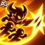
Furia del Bosque Salvaje - Nueva habilidad, Nivel de la Reliquia Legendaria 1
Descripción en el juego: Durante 9 segundos, los golpes críticos de Wodryn y sus aliados infligen daño físico adicional cada 15 segundos. El daño adicional depende de la Defensa Mágica de cada Héroe.
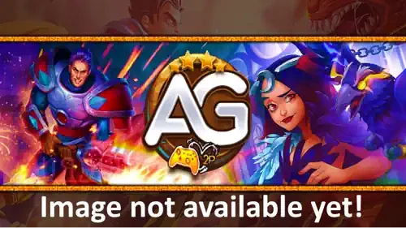
Explicación de la habilidad: Durante el efecto de 9 segundos, los golpes críticos de los aliados obtienen daño físico adicional equivalente al 100% de la Defensa Mágica del propio atacante (daño físico adicional = 1.00 × Defensa Mágica del atacante). Utiliza el atributo del aliado atacante en esa fórmula. Por ejemplo, el artefacto de arma de Wodryn puede otorgar +32,040 de Defensa Mágica al equipo; cuando esa bonificación completa coincide con Furia del Bosque Salvaje, su contribución a un golpe válido es de 32,040 de daño físico adicional antes de la mitigación (100% × 32,040 = 32,040), además de la contribución de las otras fuentes de Defensa Mágica de ese atacante. Este es un ejemplo de coincidencia de efectos, no un total de daño garantizado para cada golpe.
Para el propio Wodryn, la Defensa Mágica indicada otorga 33,048 de daño físico adicional por golpe crítico válido (100% × 33,048) antes de la mitigación. Con la bonificación completa de su arma activa al mismo tiempo, esa cifra pasa a ser 65,088 (100% × (33,048 + 32,040)). En cambio, cada aliado utiliza su propia Defensa Mágica.
Fórmula con Talismán 1: Talismán de las Dos Formas
- Daño físico adicional para Wodryn: 100% Defensa Mágica = 33,048 (100% × 33,048)
- Con la bonificación completa del artefacto de arma: 65,088 (100% × (33,048 + 32,040))
- Golpes críticos de los aliados: Cada aliado utiliza su propia Defensa Mágica en la misma fórmula.
Información de la habilidad
- Intervalo de aplicación: Cada 15 segundos
- Duración del efecto: 9 segundos
- Daño físico adicional: 100% de la Defensa Mágica del atacante
- Desencadenante durante el efecto: Golpes críticos de los aliados
- Palabras clave: Daño Físico, Bonificación, Legendaria
Prioridad de evolución: Alta — el primer hito de la reliquia añade inmediatamente una interacción de daño para el equipo. Su rendimiento depende de asestar golpes críticos durante el efecto activo y de la Defensa Mágica de cada atacante.
Ley del Bosque - Nueva habilidad, Nivel de la Reliquia Legendaria 30
Descripción en el juego: Mientras Wodryn siga vivo, todo el daño puro que los enemigos infligen a su equipo se convierte en daño mágico.

Explicación de la habilidad: Mientras Wodryn vive, el daño puro enemigo contra su equipo se convierte en daño mágico. Eso permite que la Defensa Mágica influya en un daño que, de otro modo, la ignoraría. El beneficio práctico depende de la Defensa Mágica de tu equipo y de la Penetración Mágica del atacante; la conversión no elimina automáticamente el daño. La bonificación de Defensa Mágica de su arma también encaja en este plan defensivo. La pasiva afecta únicamente al daño puro enemigo, y su protección termina cuando Wodryn muere.
Efecto con Talismán 1: Talismán de las Dos Formas
- Conversión de daño: Daño Puro Enemigo → Daño Mágico
- Requisito: Wodryn debe permanecer vivo; este efecto se aplica a su equipo.
Información de la habilidad
- Requisito: Wodryn debe estar vivo
- Daño recibido convertido: Daño Puro
- Tipo de daño resultante: Daño Mágico
- Alcance: Daño puro enemigo contra su equipo
- Palabras clave: Pasiva, Conversión de Daño, Legendaria
Prioridad de evolución: Muy Alta contra equipos de daño puro — este hito puede cambiar la forma en que tu equipo afronta esos enfrentamientos. Lo convertiría en un objetivo importante de inversión cuando el daño puro enemigo sea el problema, recordando que Wodryn debe sobrevivir para mantenerlo activo.
Consejos de Alexandre: Para invertir en las habilidades básicas, me centraría en Renovación de la Corteza y Roble Inquebrantable primero, Poder del Bosque Profundo después y Corona de la Ira al final. En cuanto a la reliquia, el nivel 1 introduce el daño adicional de golpe crítico, el nivel 20 fortalece el ciclo de Corteza de Roble y el nivel 30 es el objetivo clave para los enfrentamientos contra daño puro. Trata estas como prioridades de las mecánicas; las ganancias exactas por nivel de habilidad todavía necesitan confirmación.
Habilidad de clase Tanque - Protección de Armadura y Defensa Mágica
Descripción en el juego: Aumenta temporalmente la armadura y la defensa mágica del objetivo. La bonificación escala con la salud máxima de Wodryn.
Explicación de la habilidad: Cada 10 segundos, esta habilidad de clase protege al aliado con el menor porcentaje de Salud durante 5 segundos. El propio Wodryn puede ser el objetivo. Utiliza el porcentaje de Salud para seleccionar al objetivo, por lo que un héroe al que le falta una proporción mayor de su Salud tiene prioridad sobre otro que simplemente tiene una reserva total de Salud menor. La bonificación defensiva escala con la Salud máxima de Wodryn; no se especifica un coeficiente exacto.
- Intervalo: 10 segundos
- Duración: 5 segundos
- Objetivo: Aliado con el menor porcentaje de Salud, incluido Wodryn
- Bonificaciones: Armadura y Defensa Mágica
- Escalado: Salud máxima de Wodryn
Prioridad de evolución: Alta — añade protección al aliado que sufre más presión. Esto pertenece a la progresión de clase, separada de las mejoras de las cuatro habilidades básicas y los hitos de la reliquia.
Mejores apariencias para Wodryn en Hero Wars Alliance
Elige las apariencias de Wodryn priorizando la supervivencia y después mejora su presión física. Este es mi orden de mejora, con todas las bonificaciones de atributos de nivel 60 incluidas.
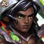
1.º - Apariencia Predeterminada
Bonificación de nivel 60: Fuerza +1,365, que otorga +54,600 Salud (1,365 × 40) y +1,365 Ataque Físico.
Esta es mi opción inicial equilibrada: más Salud para la primera línea y una pequeña mejora de sus efectos basados en ataque. El coste total indicado es de 30,825 Piedras de Apariencia de Fuerza.
Prioridad de evolución: Alta — Una combinación útil de supervivencia y escalado de habilidades, con un coste indicado de piedras inferior al de cualquiera de las dos apariencias alternativas.
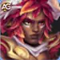
2.º - Apariencia de Arboleda Carmesí
Bonificación de nivel 60: Salud +106,645. Si Wodryn cae antes de que su eliminación de efectos negativos o la protección de la reliquia puedan ayudar, esta es la primera apariencia que impulsaría.
El total indicado es de 55,410 Piedras de Apariencia: 5,000 para comprar y 50,410 para mejorar.
Prioridad de evolución: Muy Alta — Mantenerlo vivo conserva su protección del equipo, especialmente Ley del Bosque en el nivel 30 de la reliquia. Más Salud máxima también favorece su habilidad de clase Tanque.
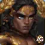
3.º - Apariencia de Corona Dorada
Bonificación de nivel 60: Penetración de Armadura +10,650. Ayuda a que su daño físico supere la Armadura enemiga, incluidos Corona de la Ira y las represalias de su reliquia.
El total indicado es de 55,410 Piedras de Apariencia: 5,000 para comprar y 50,410 para mejorar.
Prioridad de evolución: Media — Útil una vez que la supervivencia es estable, pero no aumenta su curación, la generación de Corteza de Roble ni el apoyo a los golpes críticos.
Consejos de Alexandre: Mi orden práctico de apariencias es Arboleda Carmesí para supervivencia, Predeterminada para un crecimiento equilibrado y después Corona Dorada para daño. Todas las bonificaciones de las apariencias desbloqueadas permanecen activas independientemente de la apariencia que muestres.
Prioridad de evolución de los artefactos de Wodryn
Desarrolla los artefactos de Wodryn en torno a Defensa Mágica, atributos críticos y supervivencia. El arma, el libro y el anillo favorecen cada uno una parte distinta de su conjunto de habilidades.
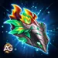
1.º - Arma: Romperraíces
Nivel 100, seis estrellas: otorga al equipo Defensa Mágica +32,040, con una probabilidad de activación del 100%. Usar Corona de la Ira activa la bonificación del artefacto de arma durante 9 segundos.
Esta bonificación favorece dos partes de las habilidades de su reliquia: Defensa Mágica ayuda contra el daño puro convertido en el nivel 30 y aumenta el daño físico adicional de Furia del Bosque Salvaje cuando coinciden sus períodos activos.
Prioridad de evolución: Muy Alta — Una bonificación defensiva para todo el equipo que también puede mejorar el daño de golpe crítico mediante Furia del Bosque Salvaje. Su beneficio ofensivo depende de sincronizar los dos efectos.
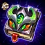
2.º - Libro: Grimorio de Espinas
Nivel 100, seis estrellas: Probabilidad de Golpe Crítico +2,967 y Defensa Mágica +5,340. Estas son bonificaciones permanentes para Wodryn, en lugar de una bonificación temporal para el equipo.
El atributo crítico favorece su propia probabilidad de activar Roble Inquebrantable; con la mejora de la reliquia de nivel 20, la protección personal exitosa genera Corteza de Roble. Defensa Mágica también contribuye al daño de su propia Furia del Bosque Salvaje.
Prioridad de evolución: Muy Alta — La inversión en artefactos más directa para su interacción personal entre atributos críticos y Corteza de Roble. Priorízalo junto con el arma en lugar de tratarlo como una pequeña mejora de daño.
3.º - Anillo: Anillo de Fuerza
Nivel 100, seis estrellas: Fuerza +3,990, que otorga +159,600 Salud (3,990 × 40) y +3,990 Ataque Físico.
Mejora su reserva de Salud y sus habilidades basadas en ataque. Súbelo en tu prioridad personal si Wodryn muere antes que el resto del equipo.
Prioridad de evolución: Alta — Una potente supervivencia y escalado personales, mientras que el arma y el libro conectan más directamente con sus características mecánicas de apoyo al equipo.
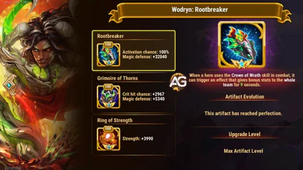
Prioridad de evolución de los glifos de Wodryn
Utiliza los glifos de Wodryn para mantener estable su primera línea y mejorar el mecanismo de atributos críticos. El orden de presentación siguiente coincide con sus cinco glifos en el juego.
1.º - Ataque Físico
Bonificación de nivel 80: +8,340.
Prioridad de evolución: Alta — Mejora Corona de la Ira, la curación de Renovación de la Corteza, las represalias de nivel 10 y ambas bonificaciones de atributos críticos de Poder del Bosque Profundo. Mejóralo cuando su supervivencia sea fiable.
2.º - Salud
Bonificación de nivel 80: +122,800.
Prioridad de evolución: Muy Alta — Mi primer objetivo cuando Wodryn muere pronto. Le da tiempo para eliminar efectos negativos, generar Corteza de Roble y mantener su protección del equipo de nivel 30.
3.º - Probabilidad de Golpe Crítico
Bonificación de nivel 80: +4,170.
Prioridad de evolución: Muy Alta — Favorece su propia probabilidad de activar Roble Inquebrantable. En el nivel 20 de la reliquia, las reducciones exitosas sobre Wodryn también generan Corteza de Roble; esta es una interacción central, no solo un atributo ofensivo.
4.º - Defensa Mágica
Bonificación de nivel 80: +12,850.
Prioridad de evolución: Alta — Mejora su resistencia mágica y el daño de su propia Furia del Bosque Salvaje. El daño adicional utiliza su Defensa Mágica, mientras los aliados siguen utilizando sus propios valores.
5.º - Fuerza
Bonificación de nivel 80: +2,110.
Prioridad de evolución: Alta — Otorga +84,400 Salud (2,110 × 40) y +2,110 Ataque Físico, lo que lo convierte en una mejora equilibrada para supervivencia y escalado de habilidades.
Consejos de Alexandre: Empezaría con Salud y Probabilidad de Golpe Crítico, y después equilibraría Fuerza, Defensa Mágica y Ataque Físico según la batalla. Si ya sobrevive con comodidad, invierte más en los atributos que mejoran su curación y su apoyo a los golpes críticos.
Cómo contrarrestar a Wodryn en Hero Wars Alliance
Atacaría su capacidad de mantenerse en combate, el momento de su definitiva o al equipo de golpes críticos que lo rodea. Estas son herramientas para los enfrentamientos, no victorias garantizadas; su eliminación de efectos negativos y el nivel de la reliquia pueden cambiar el resultado.
El bloqueo de curación puede reducir el valor de la autocuración de Renovación de la Corteza y de la curación que mantiene a su equipo en combate. Wodryn puede eliminar efectos negativos, así que observa si el bloqueo de curación está activo cuando llega la curación en lugar de dar por hecho que lo incapacita permanentemente.
Retribución Llameante castiga los golpes críticos enemigos con daño mágico. Eso convierte a Helios en una amenaza para los atacantes de golpes críticos apoyados por Wodryn, especialmente Yasmine. Ley del Bosque solo convierte el daño puro; no elimina el daño mágico que Helios ya inflige. El apoyo de Defensa Mágica de Wodryn sigue siendo importante en este enfrentamiento.
La supresión de energía puede retrasar Corona de la Ira y la bonificación del artefacto de arma que la acompaña. La energía adicional de Corteza de Roble es menos útil durante un período en el que se bloquea la obtención de energía. Como Renovación de la Corteza puede eliminar control y efectos negativos, el momento y la reaplicación importan aquí.
Consejos de Alexandre: En el nivel 30 de la reliquia, no des por hecho que un atacante de daño puro ignora automáticamente las defensas de este equipo. Identifica si Defensa Mágica está reduciendo el daño convertido y si Wodryn sigue vivo cuando impacta el ataque.
Sinergias de Wodryn en Hero Wars Alliance
Wodryn encaja con compañeros que puedan aprovechar los atributos críticos, sostener su primera línea o añadir otra capa defensiva. Estas son las interacciones en torno a las que construiría el equipo.
Wodryn pertenece a la Senda de la Naturaleza. Mientras Runa de Vida de Alvanor está activa, los aliados de Naturaleza reciben una curación más potente independientemente de su fuente, lo que favorece la supervivencia sostenida de Wodryn. Runa de Tierra también ofrece protección permanente contra ataques básicos a los héroes de Naturaleza. Comprueba sus posiciones: otro aliado de primera línea puede situarse delante de Wodryn y no recibir sus efectos destinados a quienes están detrás de él.
Dante proporciona Esquiva y lanza una lanza de represalia cuando él o un aliado esquivan daño. Wodryn añade una capa de protección separada mediante Roble Inquebrantable y favorece los golpes críticos con Poder del Bosque Profundo. En el nivel 1 de la reliquia, esos golpes críticos también pueden recibir el daño físico adicional de Furia del Bosque Salvaje durante su período activo.
Plumas Doradas aumenta la probabilidad de golpe crítico y favorece la curación, lo que ayuda a Wodryn a permanecer en combate mientras refuerza el atributo utilizado por su protección personal de Roble Inquebrantable. La reliquia de Guus de nivel 10 permite curación crítica basada en la Probabilidad de Golpe Crítico del propio Guus. Su daño adicional específico para Honor no debe contarse como una bonificación de facción para Wodryn, que pertenece a Naturaleza.
Octavia apoya una formación centrada en Esquiva, y su espejo reacciona a las esquivas de los aliados. Con Dante, ayuda al equipo a evitar ataques mientras Wodryn proporciona reducción de daño basada en probabilidades, eliminación de efectos negativos y apoyo de Defensa Mágica. Esquiva y Roble Inquebrantable son mecánicas separadas; un golpe esquivado no cuenta automáticamente como una activación de Roble Inquebrantable.
Yasmine utiliza golpes críticos para aplicar veneno y mantiene la presión sobre objetivos prioritarios. Poder del Bosque Profundo favorece su atributo crítico, mientras que sus golpes críticos físicos pueden aprovechar Furia del Bosque Salvaje durante su efecto activo. Su Esquiva también encaja con Dante y Octavia. Cuando se mueve detrás de un enemigo, vuelve a comprobar las posiciones en lugar de dar por hecho que todos los efectos destinados a quienes están detrás de Wodryn siguen alcanzándola.
Mejor equipo para Wodryn en Hero Wars Alliance
Equipo 1 - Octavia, Guus, Dante, Yasmine, Wodryn
Este es mi equipo inicial para combinar el apoyo a los golpes críticos de Wodryn con un núcleo de Esquiva. Utiliza a Octavia con Talismán 2, Guus con Talismán 1, Dante con Talismán 1, Yasmine con Talismán 2 y Wodryn con Talismán 1. La tabla va desde la retaguardia a la izquierda hasta la primera línea a la derecha; el movimiento durante la batalla puede cambiar quién recibe los efectos basados en la posición.
| Octavia · Guus · Dante · Yasmine · Wodryn | ||||
|---|---|---|---|---|
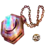 Octavia — Talismán 2 |
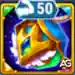 Guus — Talismán 1 |
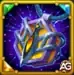 Dante — Talismán 1 |
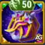 Yasmine — Talismán 2 |
Wodryn — Talismán 1 |
| Octavia | Wodryn | |||
Cómo funciona el Equipo 1
- Wodryn: mantiene la primera línea, elimina efectos negativos de sí mismo y de los aliados detrás de él y conecta los atributos críticos con la protección. Su reliquia de nivel 20 fortalece la generación de Corteza de Roble; el nivel 30 cambia los enfrentamientos contra daño puro.
- Guus: proporciona curación y Plumas Doradas. La configuración de atributos críticos del Talismán 1 encaja con su curación crítica cuando se desbloquea esa mejora de la reliquia.
- Dante: añade Esquiva, lanzas de represalia y empujes. La Agilidad y la Probabilidad de Golpe Crítico de su primer talismán encajan con esta composición de presión física.
- Yasmine: ataca objetivos prioritarios y aplica veneno mediante golpes críticos. Talismán 2 añade Esquiva y Ataque Físico a esta configuración.
- Octavia: apoya el plan de Esquiva junto con Dante y añade presión con su espejo. Mantenla con Talismán 2 para esta versión.
La idea es hacer que el equipo sea difícil de eliminar mientras Yasmine y Dante ejercen presión. El apoyo a los atributos críticos de Wodryn mejora la probabilidad de golpes críticos físicos durante Furia del Bosque Salvaje, y Guus proporciona curación para mantenerse en combate. El daño puro enemigo solo se convierte después de que Wodryn alcance el nivel 30 de la reliquia y únicamente mientras esté vivo; el resto de la composición no otorga ese efecto por sí solo.
Qué comprobaría en batalla
- Quién muere primero: si es Wodryn, mejora su Salud, Fuerza e inversión defensiva antes de añadir más daño.
- Si los aliados permanecen detrás de él: el movimiento de Yasmine y el desplazamiento causado por los enemigos pueden alterar el alcance de sus bonificaciones y de la eliminación de efectos negativos.
- Qué ocurre durante los períodos de golpes críticos: compara el daño cuando coinciden Furia del Bosque Salvaje y la bonificación de Defensa Mágica de Romperraíces.
- La respuesta del oponente: Helios puede castigar a los atacantes de golpes críticos, mientras que el bloqueo de curación o la supresión de energía pueden alterar la capacidad del equipo de mantenerse en combate y su sincronización.
Consejos de Alexandre: Prueba esta composición exacta antes de cambiar sus talismanes. Compara repeticiones contra el mismo oponente y cambia una inversión cada vez. Una interacción potente entre habilidades es un motivo para probar un equipo, no una prueba de que gana todos los enfrentamientos.
¿Es Wodryn bueno para la Hidra?
Trataría a Wodryn como una opción de supervivencia y apoyo para la Hidra antes de asignarle una función de daño. Su eliminación de efectos negativos, autocuración y bonificación de Defensa Mágica pueden ayudar a un equipo a durar más, pero esta guía no establece una clasificación comprobada para la Hidra ni una composición de máximo daño para él.
Evalúa cada cabeza por separado. Comprueba si su eliminación de efectos negativos retira los efectos que realmente están frenando a tu equipo, si sobrevive durante todo el intento y si sustituir a un héroe de daño por él aumenta o reduce el daño total del equipo. Ley del Bosque solo importa cuando el daño enemigo es puro; no mejora el enfrentamiento simplemente porque el objetivo sea un jefe.
Wodryn - Veredicto final de Alexandre
Lo que más me interesa de Wodryn es cómo sus mecánicas se refuerzan entre sí: la eliminación de efectos negativos crea Corteza de Roble, Corteza de Roble favorece los atributos críticos y la reducción de daño personal exitosa puede crear más Corteza de Roble una vez desbloqueado el nivel 20 de la reliquia. Su conversión de nivel 30 te da entonces una respuesta específica al daño puro enemigo.
Mi configuración inicial es Talismán de las Dos Formas, apariencias y glifos centrados en la supervivencia e inversión en los artefactos de libro y arma. Mantén Renovación de la Corteza y Roble Inquebrantable en el centro de la configuración y después mejora el escalado basado en ataque cuando sobreviva de forma fiable. El nivel 20 de la reliquia es el hito clave del ciclo de recursos; el nivel 30 se convierte en un objetivo importante cuando los oponentes de daño puro son el problema.
Para el primer equipo, empezaría con Octavia T2, Guus T1, Dante T1, Yasmine T2 y Wodryn T1. Observa si Wodryn sigue vivo, si su protección alcanza a los aliados que esperas y si el equipo elimina objetivos durante sus períodos de bonificación. Esos resultados te indicarán dónde debe ir tu siguiente mejora.
¡Deja tu opinión!
¿Te gustó nuestra guía de Wodryn? ¿Hay algo que no hayas entendido o para lo que quieras sugerir cambios? Te invitamos a participar en nuestra sección de comentarios de la página del Blog Alexandre Games. Siéntete libre de expresar tu opinión, aclarar tus dudas y compartir tus sugerencias.
Haz clic en el botón de abajo para empezar: